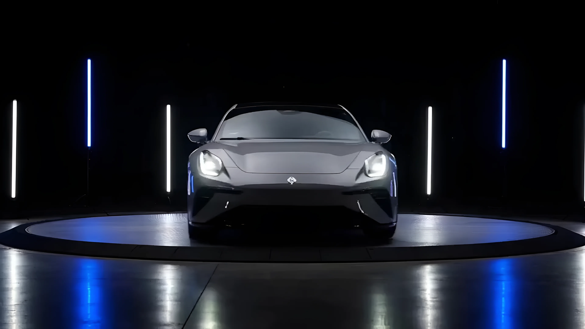
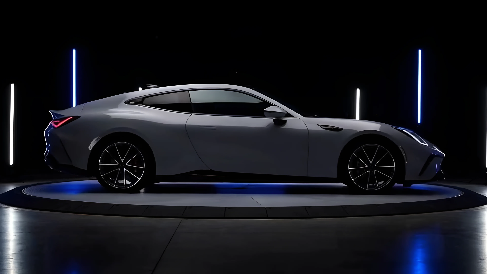
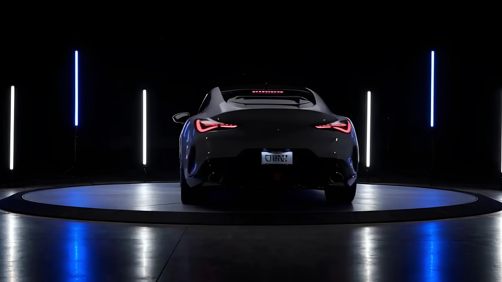

Garage automobile — Le Havre
Votre voiture, entre de bonnes mains.
Mécanique, diagnostic et entretien au Havre.
Montrez-nous où.
Faites tourner la voiture, touchez la zone qui vous inquiète. La fiche se remplit toute seule et l'atelier reçoit une demande claire, sans appel téléphonique.



Glissez pour faire tourner la voiture
Votre demande, en trois touches.
Touchez une zone sur la voiture : la fiche se remplit, l'atelier reçoit une demande claire.
- 01Zone du véhiculeÀ choisir sur la voiture
- 02Ce que vous constatezBruit, voyant, vibration…
- 03Pièce concernéeFacultatif
Dix savoir-faire.
Une seule exigence.
Chaque page détaille les pièces concernées, les signes qui doivent alerter, et transmet votre demande directement à l'atelier.
Vous montrez.On s'occupe du reste.
- 01
Vous montrez.
Une zone sur la voiture, un symptôme, quelques mots. Pas besoin de connaître le nom de la pièce.
- 02
On vérifie.
L'atelier étudie votre demande puis contrôle le véhicule avant de proposer quoi que ce soit.
- 03
On explique.
Vous savez ce qui est fait, pourquoi, et ce qui peut attendre. Vous validez avant les travaux.